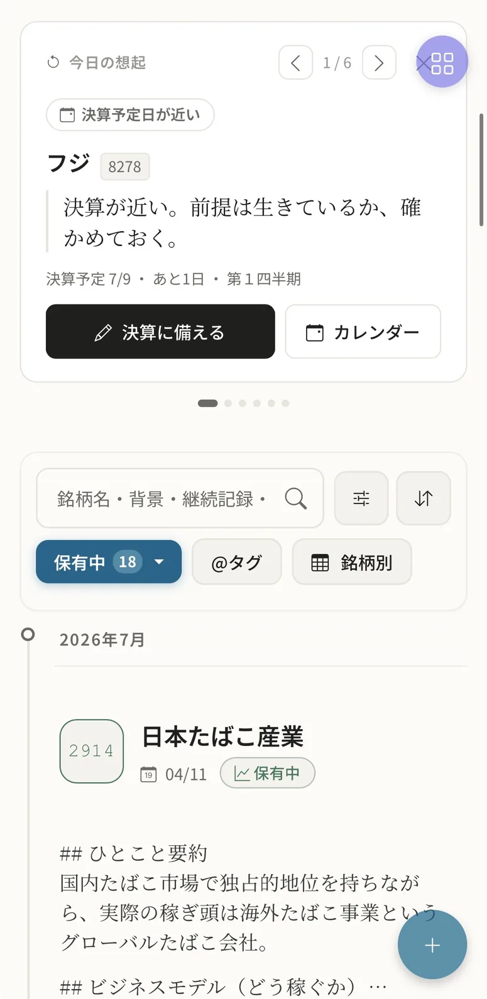

カブログKABULOG
Recall ／ 想起と投資家カルテ
ホームを開くと、損益ではなく、
過去の自分が現れる。
答え合わせを待つ仮説・1年前の今日・最近の学び。
毎日ひらくたび、忘れていた思考と再会する。
今日の想起


投資家カルテ
想起検証予定日が、死蔵しかけた過去の記録を静かに連れ戻す
投資家カルテあなたが「どういう投資家か」を、成績表ではなく言葉で返す
答え合わせを待つ仮説・1年前の今日・最近の学び。
毎日ひらくたび、忘れていた思考と再会する。
